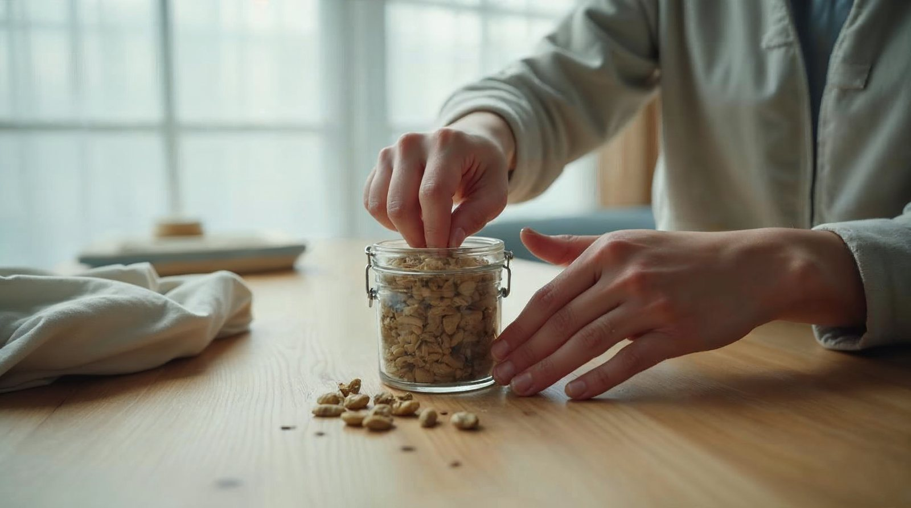
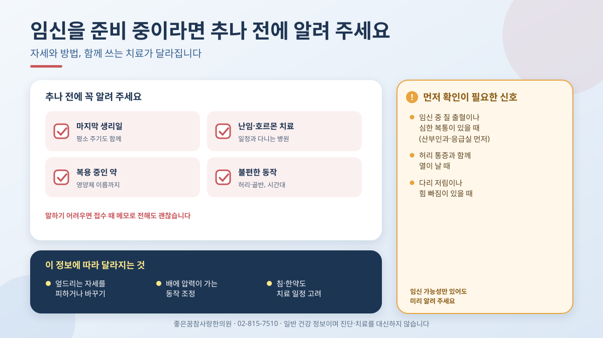

이종호 한의사 감수좋은꿈참사랑한의원 대표원장 (한의사 면허번호 19769)발행 2026-11-23 · 수정 2026-11-26
이 글의 차례
임신을 준비하는 중에 허리나 골반이 불편해 추나를 받아 볼까 망설이고 계신다면, 그 망설임을 그대로 진료실에 가져와 주세요.
임신을 준비 중이거나 임신 가능성이 조금이라도 있다면 추나는 물론 침이나 한약을 시작하기 전에도 먼저 알려 주셔야 하고, 마지막 생리 시작일과 난임·호르몬 치료 여부, 복용 중인 약과 영양제에 따라 엎드리는 자세와 누르는 방향, 힘의 세기, 함께 쓰는 치료가 달라집니다.
추나를 할지 말지, 한다면 어떻게 할지는 그 이야기를 들은 뒤 함께 정합니다. 임신 중 출혈이나 심한 복통이 있다면 추나보다 산부인과나 가까운 응급실 확인이 먼저입니다.
아침 6시 50분, 알람이 울리기 전에 눈이 떠집니다. 머리맡의 체온계를 집어 들고, 휴대폰 앱에 오늘의 숫자를 적어 넣습니다. 생리 예정일까지 남은 날짜를 한 번 세어 보고는 화면을 끕니다. 출근 준비를 하며 엽산 한 알을 삼키고 현관을 나서는데, 허리 아래가 또 묵직합니다.
지난달부터 골반 한쪽이 뻐근해 추나 상담을 받아 볼까 생각하던 참입니다. 그런데 문득 걱정이 앞섭니다. 혹시 이번 달에 임신이 됐다면? 아직 아무것도 모르는데 받아도 괜찮을까?
진료실에서 이런 말씀을 자주 듣습니다. 임신을 준비하고 있는데 추나나 침을 받아도 되느냐고요. 접수대에서 망설이다가 진료실에 들어와서야 작은 목소리로 말씀하시는 분도 많습니다. 아직 확실한 것도 아닌데 괜히 유난을 떠는 것 같아 말을 못 했다고요.
저는 그 망설임이 어떤 마음인지 조금은 압니다. 기다리는 시간이 길어질수록 작은 일 하나에도 조심스러워지고, 혹시 내가 무언가를 잘못해서 그런 건 아닐까 스스로를 돌아보게 되지요. 그 조심스러움은 유난이 아닙니다. 소중한 것을 기다리는 사람이라면 누구나 갖게 되는 마음입니다.
왜 '가능성'만 있어도 먼저 알려야 할까요
임신 초기에는 본인도 임신 사실을 모르는 경우가 많습니다. 생리 예정일 즈음까지는 임신 테스트로도 알기 어려운 때가 있고, 생리가 며칠 늦어지는 일은 피곤하거나 마음을 많이 쓴 달에도 흔히 생깁니다. 그래서 확실해진 다음에 말하려고 기다리기보다, 가능성이 있다는 것만으로도 먼저 알려 주시는 편이 안전합니다. 확실하지 않아도 괜찮습니다.
임신을 하면 몸이 빠르게 변합니다. 호르몬의 영향으로 골반 주변 인대가 느슨해지는 것으로 알려져 있어, 같은 힘이라도 관절에 전해지는 방식이 달라질 수 있습니다. 그래서 추나를 하게 되더라도 자세와 힘의 방향을 더 신중하게 정합니다. 엎드리는 자세나 배에 압력이 가는 동작은 피하거나, 옆으로 누운 자세나 앉은 자세로 바꾸는 방법을 고민합니다.
추나만의 문제가 아닙니다. 한의학에서는 임신 중에 조심하는 침 자리가 예로부터 전해 오고, 약침과 온열 치료도 임신 여부에 따라 할지 말지가 달라집니다.
한약은 약재마다 임신 중 안전성을 따로 살펴야 하고, 체외충격파 같은 장비는 임신 중에는 쓰지 않거나 아주 신중하게 판단합니다. 추나만 받을 거라 괜찮겠지 하고 넘기지 마시고, 어떤 치료를 받든 먼저 말씀해 주세요.
난임 치료나 호르몬 치료를 받고 계시다면 그 일정도 꼭 알아야 합니다. 배란을 돕는 약이나 주사를 쓰는 시기, 채취나 이식을 앞둔 시기에는 몸이 평소와 다릅니다. 배에 주사를 맞고 계신다면 엎드리거나 배를 누르는 동작도 다시 생각해야 합니다. 저는 그 일정표를 먼저 듣고, 그 앞뒤로 무엇을 피하고 무엇을 할 수 있을지 함께 정합니다.
약과 영양제도 빠뜨리지 말아 주세요. 엽산이나 철분제처럼 흔히 드시는 영양제부터 호르몬제, 갑상선약, 혈액을 묽게 하는 약까지 모두 알아야 겹치는 부분을 확인할 수 있습니다. 혈액을 묽게 하는 약을 드시는 중이라면 침이나 추나 뒤에 멍이 들기 쉬워 미리 알고 있어야 합니다. 약물이나 음식 알레르기, 앓고 있는 병이 있다면 그것도 함께 말씀해 주세요.
골반이나 허리가 불편한 이유도 함께 살핍니다. 오래 앉아 일하는 자세 때문인지, 출산 뒤부터 이어진 불편인지, 생리 주기에 따라 달라지는지에 따라 보는 방향이 달라집니다. 다리 저림이나 힘 빠짐이 있다면 신경 쪽 확인이 먼저일 수 있습니다. 같은 골반 통증이라는 이름이어도 사람마다 사정이 다릅니다.
이런 분들을 자주 뵙습니다
임신을 준비하며 직장에 다니는 분들이 많습니다. 하루 종일 앉아 일하다 보니 허리와 골반이 묵직한데, 생리 예정일이 가까워지면 진료를 받아도 되는지 망설이십니다. 이럴 때는 예정일 무렵이라도 진료는 받으실 수 있다고 말씀드립니다. 다만 그날은 조심스러운 방법을 고르고, 임신 여부가 확인된 뒤에 다시 상의합니다.
시험관 시술 일정 중인 분들도 계십니다. 병원에 가야 하는 날이 촘촘해 몸도 마음도 지쳐 있고, 주사와 약 때문에 몸이 붓고 무겁다고 하십니다. 이런 분께는 다음 시술 날짜와 병원에서 들은 주의 사항을 먼저 여쭙고, 그 범위 안에서 할 수 있는 것을 고릅니다. 시술 병원 주치의와도 꼭 상의해 보시라고 말씀드립니다.
첫아이를 낳고 둘째를 준비하는 분들도 자주 뵙습니다. 아이를 안고 업느라 손목과 허리가 지쳐 있고, 출산 뒤부터 골반 한쪽이 불편했다는 분도 있습니다. 수면 부족과 아이를 안는 반복 자세가 겹친 몸입니다. 이런 분께는 지금 불편한 곳과 함께 출산 이후 몸이 어떻게 지내 왔는지, 수유 중인지를 차근차근 여쭙습니다.
생리가 늦어졌는데 아직 테스트를 해 보지 않은 채 예약일이 다가온 분도 있습니다. 이럴 때는 오시기 전에 임신 테스트를 먼저 해 보시고 결과를 알려 달라고 부탁드립니다. 결과가 애매하다면 그날은 조심스러운 방법만 고르고, 산부인과 확인 뒤에 다시 상의합니다.
함께 준비하는 배우자분이 허리나 어깨 때문에 오시는 경우도 있습니다. 임신 준비는 두 사람의 몸이 함께하는 일이라, 원인을 살피는 검사도 산부인과와 비뇨의학과에서 두 분이 함께 받아 보시길 권합니다. 두 분의 잠과 식사, 생활 리듬을 같이 살펴보는 것도 의미가 있습니다.
진료 전에 이렇게 준비해 오세요
먼저 생리 기록입니다. 최근 석 달 정도의 생리 시작일과 평소 주기를 앱이나 달력에 정리해 두세요. 진료실에서 마지막 생리 시작일을 여쭈면 바로 답하실 수 있으면 좋습니다. 생리가 평소보다 일주일 넘게 늦어졌다면 오시기 전에 임신 테스트로 먼저 확인해 보세요.
드시는 약과 영양제는 이름을 적어 오시거나 약 봉투와 영양제 통을 사진으로 찍어 오시면 됩니다. 다른 병원에서 받은 검사 결과가 있다면 함께 가져와 주세요. 난임 병원에 다니신다면 다음 진료일과 시술 예정일, 병원에서 받은 안내문이나 들은 주의 사항을 챙겨 와 주시면 좋습니다. 저는 그 일정 안에서 오늘 할 수 있는 것을 고릅니다.
접수대에서 말씀하시기 어려우면 메모로 전해 주셔도 괜찮습니다. 진료실에서 따로 말씀하셔도 됩니다. 옷은 배를 조이지 않는 편한 옷이 좋고, 엎드리는 자세가 불편하시면 시작하기 전에 미리 말씀해 주세요. 추나를 받는 도중에 배가 당기거나 불편한 느낌이 들면 참지 마시고 바로 말씀해 주시면 그 자리에서 멈춥니다.
일상에서는 오래 앉을 때 골반을 받쳐 주는 쿠션을 쓰고, 다리를 꼬지 않으며, 50분쯤 앉아 있었다면 일어나 몇 분 걸어 주세요. 무거운 짐은 나눠 들고, 잘 때 옆으로 누우신다면 무릎 사이에 베개를 끼워 골반이 비틀리지 않게 해 보세요. 허리와 골반이 언제, 어떤 동작에서 불편한지 하루 한 줄씩 적어 두시면 진료 때 이야기를 나누기가 한결 쉬워집니다.
먼저 이렇게 여쭙니다
진료 초반에 제가 여쭙는 것들입니다. 스스로 한번 점검해 보시겠어요?
- 마지막 생리 시작일을 바로 말할 수 있나요?
- 생리가 평소 주기보다 늦어지고 있지는 않나요?
- 최근 임신을 준비하며 피임을 하지 않으셨나요?
- 엽산이나 철분제 같은 영양제, 다른 병원에서 받은 약을 드시나요?
하나라도 해당한다면 진료를 시작하기 전에 먼저 말씀해 주세요.

양생, 생명을 기른다는 말
한의학에는 양생이라는 말이 있습니다. 양생의 양은 아이를 키우는 양육의 양과 같은 글자이고, 생은 생명입니다. 생명을 기르라, 생명을 소중히 돌보라는 말이지요. 『동의보감』도 병을 어떻게 고치느냐 못지않게 어떻게 지키며 사느냐를 오래 이야기합니다.
옛 양생법에는 침을 함부로 뱉지 말라는 이야기까지 있습니다. 내 몸에서 나오는 것 하나하나가 귀하니 아끼라는 뜻입니다. 처음 배울 때는 이렇게까지 해야 하나 싶었는데, 지금은 참 맞는 말이라고 느낍니다. 새 생명을 기다리는 시기라면 내 몸을 하나하나 아끼고 사랑하라는 그 마음이 더 가깝게 와닿으실 겁니다.
예전에 동네 복지관 강연에서 어르신들께 어머니가 낳아 주신 내 건강을 단단하게 지키시라는 말씀을 드린 적이 있습니다. 어떤 약을 드시라는 말이 아니었습니다. 새로운 것을 자꾸 보태기보다 이미 받은 것을 잘 지키자는 뜻이었습니다. 지키는 순서를 여쭤보시면 저는 먼저 잘 쉬고, 아픈 것은 미루지 않고 치료하고, 그다음에 움직이자고 말씀드립니다.
임신을 기다리는 시간은 달력을 자주 보게 만듭니다. 예정일이 다가오면 마음이 조이고, 몸의 작은 변화 하나에도 신경이 곤두섭니다. 그러다 생리가 시작되면 실망과 함께 또 한 달을 시작하지요. 그 시간을 몇 번이고 지나오신 분께 저는 쉽게 괜찮다는 말을 하지 못합니다.
다만 이 말씀은 드리고 싶습니다. 사람은 생각보다 쉽게 낙담합니다. 몸을 돌보는 일이 또 하나의 숙제가 되어 못 지킨 날마다 스스로를 탓하게 된다면, 그건 양생의 마음과 거리가 멉니다. 못 지킨 날이 있으면 다음 날 다시 하면 됩니다.
그리고 한 가지는 분명히 말씀드립니다. 저는 이 진료가 임신을 약속한다고 말씀드리지 않습니다. 제가 할 수 있는 것은 지금 불편한 허리와 골반을 살피고, 몸 전체의 리듬을 함께 들여다보고, 무엇을 조심해야 하는지 같이 정하는 일입니다. 치료로 할 수 있는 것과 할 수 없는 것을 솔직하게 나누어 말씀드리는 것도 제 일이라고 생각합니다.
얼마나 지켜보고, 언제 진료를 받을까요
허리와 골반의 불편이 2주 넘게 이어지거나 잠을 방해한다면 혼자 참지 마시고 상담을 받아 보세요. 이미 임신 중이시라면 산부인과에 먼저 알리고, 거기서 들은 주의 사항의 범위 안에서 상담을 받으시면 됩니다.
생리가 평소보다 일주일 넘게 늦어졌다면 임신 테스트로 먼저 확인해 보세요. 결과가 애매하거나 생리 같지 않은 소량의 출혈이 있다면 며칠 기다리기보다 산부인과에서 확인받는 편이 좋습니다.
이런 증상은 먼저 확인이 필요합니다
- 임신 중이거나 임신 가능성이 있는데 질 출혈이나 심한 복통이 있는 경우
- 스스로를 해칠 생각이 들면 ☎ 109로 바로 연락하세요.
이런 신호가 있으면 한의원보다 가까운 병원이나 응급실을 먼저 찾으세요.
좋은꿈참사랑한의원에 처음 오시면
처음 오시면 저는 불편한 곳과 함께 마지막 생리 시작일, 임신 가능성, 난임이나 호르몬 치료 일정, 복용 중인 약과 영양제를 진료 초반에 여쭙습니다. 허리와 골반이 언제부터, 어떤 동작에서 불편한지, 전에 받아 본 치료가 있는지도 지난 이야기로 듣습니다.
이전 출산이나 수술 이력은 말씀하시기 편한 만큼만 들려주시면 됩니다. 잠과 식사, 몸이 찬 편인지, 화장실은 편한지도 함께 여쭙습니다.
그다음 양손을 올려 봐 달라고 말씀드리고 맥을 짚습니다. 앞서 말씀드렸듯 맥으로 임신 여부를 가리지는 않습니다. 대신 몸이 얼마나 지쳐 있는지, 긴장이 얼마나 쌓여 있는지를 가늠합니다. 진맥은 상담의 시작이라, 무엇이 문제인지 알아야 무엇을 할지 정할 수 있습니다.
이어서 서 있는 자세와 허리, 골반의 움직임을 살핍니다. 장비는 필요하다고 판단될 때만 쓰고, 임신 가능성이 있다면 체외충격파처럼 임신 중에 쓰지 않는 장비는 빼고 정합니다.
그렇게 들은 이야기를 모아 추나를 할지, 한다면 어떤 자세와 강도로 할지를 정하고, 오늘 받을 치료와 그 이유를 먼저 설명드립니다. 추나가 지금은 맞지 않다고 판단되면 부담이 적은 다른 방법을 상태에 맞게 검토하고, 산부인과 확인이 먼저 필요하다면 그쪽을 먼저 안내합니다.
치료를 마치면 시원하신지, 괜찮으신지 여쭙고 불편하다고 하시면 다시 봅니다. 진료실을 나서기 전에는 집에서 해 볼 수 있는 편한 자세를 함께 알려 드립니다. 다시 오시면 그 자세가 집에서 어땠는지부터 이어서 여쭙습니다. 추나요법의 건강보험 적용 여부와 비용, 몇 번쯤 받게 되는지는 사람마다 달라 방문 전 전화로 확인해 주세요.
오실 때 마지막 생리 시작일과 평소 주기, 난임·호르몬 치료 일정과 다니는 병원, 복용 중인 약과 영양제 이름, 허리와 골반이 불편한 동작과 시간대를 메모해 오시면 이야기가 훨씬 빨라집니다.
마치며
기다리는 동안에도 허리는 아프고 하루는 이어집니다. 혹시 무슨 일이 생길까 봐 그 불편을 참고만 지내실 필요는 없습니다. 다만 그 전에, 지금 몸의 사정을 먼저 들려주세요. 그 이야기가 있어야 저도 무엇을 하고 무엇을 하지 않을지 함께 고를 수 있습니다.
오늘 하실 일은 하나면 충분합니다. 마지막 생리 시작일을 메모장에 적어 두는 것. 다음에 오시면 그 날짜와, 그사이 산부인과에서 들은 이야기부터 여쭙겠습니다.
함께 읽으면 좋은 글
- 임신 중이거나 임신 가능성이 있을 때는 한의원에 무엇을 알려야 하나요?
- 임신을 준비하는 부부는 생활에서 무엇부터 함께 점검하나요?
- 임신을 준비하며 부부가 함께 한약 상담을 받을 때는 무엇을 준비하면 되나요?

여쭙는 것
- 마지막 생리 시작일을 바로 말할 수 있나요?
- 생리가 평소 주기보다 늦어지고 있지는 않나요?
- 최근 임신을 준비하며 피임을 하지 않으셨나요?
먼저 확인이 필요한 신호
- 임신 중이거나 임신 가능성이 있는데 질 출혈이나 심한 복통이 있는 경우
- 스스로를 해칠 생각이 들면 109로 바로 연락하세요.
자주 묻는 질문
임신 중에도 추나를 받을 수 있나요?
임신 시기와 몸 상태에 따라 달라 진찰 후 함께 판단합니다. 산부인과 주치의와 상의하시길 권합니다.
말하기 어려우면 어떻게 하나요?
접수 때 메모로 전해 주셔도 괜찮습니다.
임신 준비 중인데 침은 맞아도 되나요?
임신 가능성과 치료 일정을 먼저 확인한 뒤 맞는 방법을 정합니다.
시험관 시술 중에도 한의원 진료를 받을 수 있나요?
시술 일정과 복용 중인 약을 알려 주시면 함께 받을 수 있는지 신중하게 판단합니다. 시술 병원 주치의와도 상의해 주세요.
진료 시간은 어떻게 되나요?
좋은꿈참사랑한의원은 평일 09:30~20:00(점심 13:00~14:00), 토·일·공휴일 09:30~15:00에 진료합니다.
좋은꿈참사랑한의원은 재진 때 지난번 이야기부터 이어서 여쭙니다. 진료시간과 예약은 오시는 길에서 확인하세요.
어디서 상담받을 수 있나요?
좋은꿈참사랑한의원은 서울 동작구 만양로2길 2 신성빌딩 3층·5층(서울 동작구 상도동, 7호선 상도역 3번 출구 근처)에 있습니다. 한의사 3명(이종호 대표원장, 조영기 수석진료원장, 정원영 진료원장)이 진료합니다. 진료시간은 평일 09:30~20:00(점심 13:00~14:00), 토·일·공휴일 09:30~15:00이며, 방문 전 전화로 확인을 권합니다. 예약은 네이버 예약, 카카오톡 상담, 전화 02-815-7510로 받습니다.
이 글은 일반적인 건강 정보이며 개인의 진단이나 치료를 대신하지 않습니다. 증상이 있거나 복용 중인 약이 있다면 진료를 통해 확인하세요. 치료 효과는 개인마다 다를 수 있습니다.
작성 기준: 일반적으로 알려져 있는 건강 정보를 참고해 정리했습니다(대표원장 감수). 증상 기록은 1~2주 동안 하루 1회, 비슷한 시간에 적어 오시면 지난 상태와 비교하기 쉽습니다.